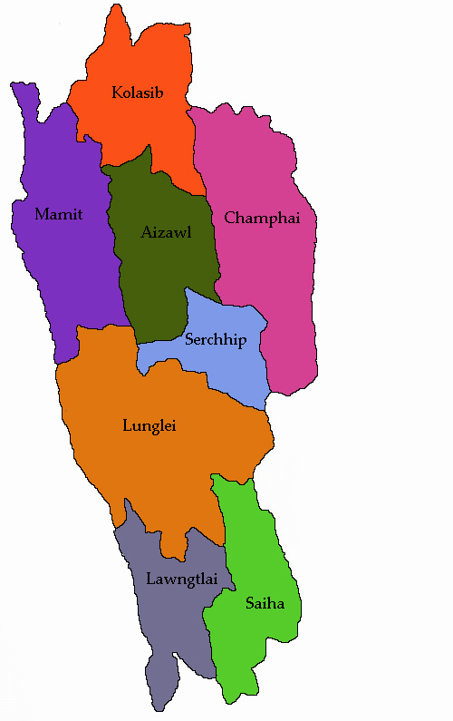
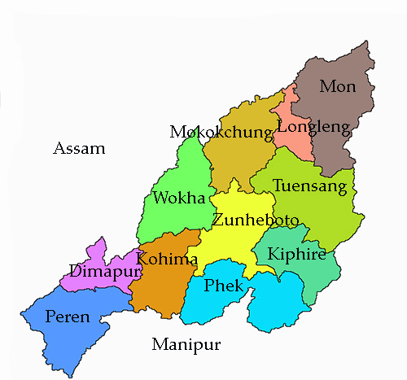

BACK
LET'S HAVE A LOOK AT THE TOUR MAP

MIZORAM MAP

NAGALAND MAP
WHERE TO VISIT , WHAT TO SEE?
SOME HOT PICKS(#HAVE_TO_VISIT)
- AIZAWL - HOME TO THE STATE MUSEUM (MIZORAM)
- LUNGLEI - THE BRIDGE OF ROCK ,FAMOUS FOR SCENIC BEAUTY (MIZORAM)
- SAIHA - BEST BET FOR ANGLING ENTHUSIASTS (MIZORAM)
- KOLASIB - GREENARY AND LAKES (MIZORAM)
- REIEK - HIGHEST HILLS OF MIZORAM WHERE THE CLOUDS KISS THE MOUNTAIN PEAKS (MIZORAM)
- VANTAWNG FALLS - HIGHEST WATERFALL IN THE STATE (MIZORAM)
- HMUIFANG - ROCK SCENIC BEAUTY (MIZORAM)
- TAMDIL - TAM LAKE,LARGEST LAKE IN THE STATE (MIZORAM)
- FALKAWN - MODERN VILLAGE WITH TRADITIONAL LIFESTYLE (MIZORAM)
- KOHIMA - NATURAL AND ETHNIC BEAUTY, STILL RULED BY THE WARRIORS OF NAGA TRIBE (NAGALAND)
- TUENSANG - NATURALLY FORMED FINGER SHAPED TREE TRUNKS (NAGALAND)
- TOUPHEMA VILLAGE - GREEN AND VERDANT HILLOCK PLACED VILLAGE (NAGALAND)
- KHONOMA VILLAGE - TERRACE FARM LANDS (NAGALAND)
- KISAMA - NAGA HERITAGE VILLAGE (NAGALAND)
- SHILLOI LAKE - FOOT SHAPED LAKE IN THE HEART OF THE STATE (NAGALAND)
SOME_OTHER_ATTRACTIONS
- SERCHHIP - DISTRICT WITH THE HIGHEST LITERACY RATE IN INDIA (MIZORAM)
- CHAMHAI - BUDDING CULTURAL HUB (MIZORAM)
- DAMPA TIGER RESERVE (MIZORAM)
- PHAWNGPUI (MIZORAM)
- MOKOKCHUNG - MOST SIGNIFICANT URBAN HUB (NAGALAND)
- DIMAPUR - LAND OF TRANSIT (NAGALAND)
- PHEK - HILLY AREA RICH IN FLORA AND FAUNA (NAGALAND)